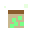
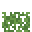
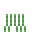
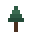
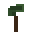

Herbalist
The Herbalist sells these goods. The herbalist buys plants, seeds, crops, berries, flowers and mushrooms.
Buying anything that can be crafted costs half of what its materials are worth. Shops have levels 1 to 3; better goods appear as the shop is upgraded.
Stock
| Item | Price | |
|---|---|---|
 Growth dust | 240 coins | |
| Seed potato ×3 | 2 coins | |
| Heart of vigor | from 1200 coins | |
| Heart of the arcane | from 1000 coins | |
 Wheat seeds ×3 Wheat seeds ×3 | 2 coins | |
| Carrot seeds ×3 | 2 coins | |
| Pumpkin seeds ×2 | 1 coins | |
| Sapling ×2 | 4 coins | |
 Berry bush | 4 coins | |
| Herb plant ×2 | 42 coins | |
 Red flower ×3 Red flower ×3 | 5 coins | |
 Yellow flower ×3 Yellow flower ×3 | 5 coins | |
 Blue flower ×3 Blue flower ×3 | 24 coins | |
 Fern ×3 | 5 coins | |
| Cactus | 4 coins | |
 Sugar cane ×2 Sugar cane ×2 | 4 coins | |
 Herbal tonic Herbal tonic | 30 coins | |
 Healing potion Healing potion | 4 coins | |
 Spruce sapling ×2 | 9 coins | |
| Birch sapling ×2 | 9 coins | |
 Palm sapling ×2 Palm sapling ×2 | 9 coins | |
| Jungle sapling ×2 | 9 coins | |
 Dark oak sapling ×2 | 9 coins | |
| Pine sapling | 10 coins | |
| Blue mushroom spore | 14 coins | |
| Green mushroom spore | 14 coins | |
| Red mushroom spore | 14 coins | |
| Orange mushroom spore | 14 coins |